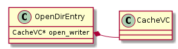

Cache Logic / Operations
Cache Types
Vol
A badly named class that represents a stripe.
OpenDirEntry
Represents an active cache object.
CacheHttpInfoVector::
::
Slice
A version of an alternate.
CacheVC
A cache operation object that intermediates between the HTTP transaction and an object in cache. Each instance is associated with a specific cached object and a specific transaction.
Class diagram.


![digraph data {
rankdir=LR
node [shape=plaintext]
CacheVC [ label=< <TABLE BORDER="0" CELLBORDER="1" CELLSPACING="0">
<TR><TD BGCOLOR="palegreen" port="name">\N</TD></TR>
</TABLE> >
]
OpenDirEntry [ label=< <TABLE BORDER="0" CELLBORDER="1" CELLSPACING="0">
<TR><TD BGCOLOR="palegreen" port="name">\N</TD></TR>
</TABLE> >
]
HttpCacheAlt [ label=< <TABLE BORDER="0" CELLBORDER="1" CELLSPACING="0">
<TR><TD BGCOLOR="palegreen" port="name">\N</TD></TR>
<TR><TD port="m_earliest">m_earliest</TD></TR>
<TR><TD>m_cached_idx</TD></TR>
</TABLE> >
]
FragmentDescriptor [ label=< <TABLE BORDER="0" CELLBORDER="1" CELLSPACING="0">
<TR><TD BGCOLOR="palegreen" port="name">\N</TD></TR>
<TR><TD ALIGN="LEFT">m_key</TD></TR>
<TR><TD ALIGN="LEFT">m_offset</TD></TR>
<TR><TD ALIGN="LEFT">⊤m_flags</TD></TR>
<TR><TD ALIGN="LEFT"> ⊢.cached_p</TD></TR>
</TABLE> >
]
Slice [ label=< <TABLE BORDER="0" CELLBORDER="1" CELLSPACING="0">
<TR><TD BGCOLOR="palegreen" port="name">\N</TD></TR>
<TR><TD ALIGN="LEFT" port="writers">_writers</TD></TR>
<TR><TD ALIGN="LEFT" port="active">_active</TD></TR>
<TR><TD ALIGN="LEFT" port="waiting">_waiting</TD></TR>
<TR><TD ALIGN="LEFT">_content_buffers</TD></TR>
<TR><TD ALIGN="LEFT">_wait_idx_min</TD></TR>
<TR><TD ALIGN="LEFT">_wait_idx_max</TD></TR>
<TR><TD ALIGN="LEFT">_gen</TD></TR>
<TR><TD ALIGN="LEFT">⊤_flags</TD></TR>
<TR><TD ALIGN="LEFT"> ⊢.dirty</TD></TR>
</TABLE> >
]
HttpCacheAlt:m_earliest -> FragmentDescriptor:name [dir=back,arrowtail=diamond]
Slice:writers -> CacheVC:name [dir=back,arrowtail=odiamond,label="1:*"]
Slice:active -> CacheVC:name [dir=back,arrowtail=odiamond,label="1:*"]
Slice:waiting -> CacheVC:name [dir=back,arrowtail=odiamond,label="1:*"]
}](../_images/graphviz-38bfae96d30e83365223a363d7a60a627a0ea878.png)